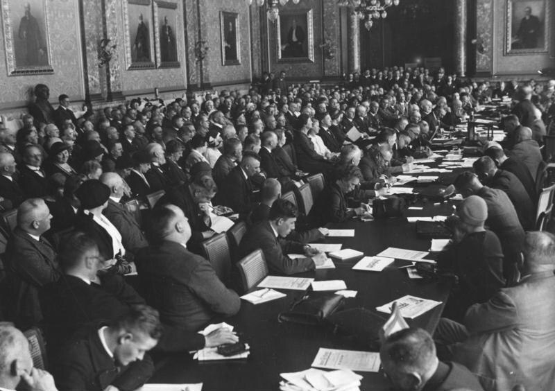

Pfarrer Semrau an der Spitze des Danziger Volkstags
Einstimmiges Votum für den deutschnationalen Abgeordneten
Danzig, 5. Mai. (Eigener Drahtbericht.)

Deutschnationale Volkspartei, nationalkonservative Partei in der Weimarer Republik
Wikimedia Commons
In der heutigen Sitzung des Danziger Volkstags kam es zu einer bemerkenswerten personellen Entscheidung.[1] Wie die Deutsche Allgemeine Zeitung meldet, wählte die Versammlung den deutschnationalenAbgeordneten Pfarrer Lic. Alfred Semrau zu ihrem neuen Präsidenten.[1] Die Abstimmung erfolgte einstimmig, was angesichts der oft spannungsgeladenen politischen Verhältnisse in der Freien Stadt ein beachtliches Vertrauensvotum darstellt.[1]
Semrau, der als erfahrener Parlamentarier gilt, nahm die Wahl zum Präsidenten des Danziger Landesparlaments unmittelbar im Anschluss an das Votum an.[1] Mit dieser Entscheidung ist die Führung der Volksvertretung in der Freien Stadt Danzig vorerst gesichert.
Historische Einordnung
Der Theologe und Politiker Alfred Semrau (1882–1947) gehörte der Deutschnationalen Volkspartei (DNVP) an und prägte als Präsident des Danziger Volkstags die Politik der Freien Stadt Danzig in den 1920er Jahren entscheidend mit. Der Volkstag war das Parlament der nach dem Ersten Weltkrieg vom Deutschen Reich abgetrennten und unter Aufsicht des Völkerbundes stehenden Freien Stadt Danzig.